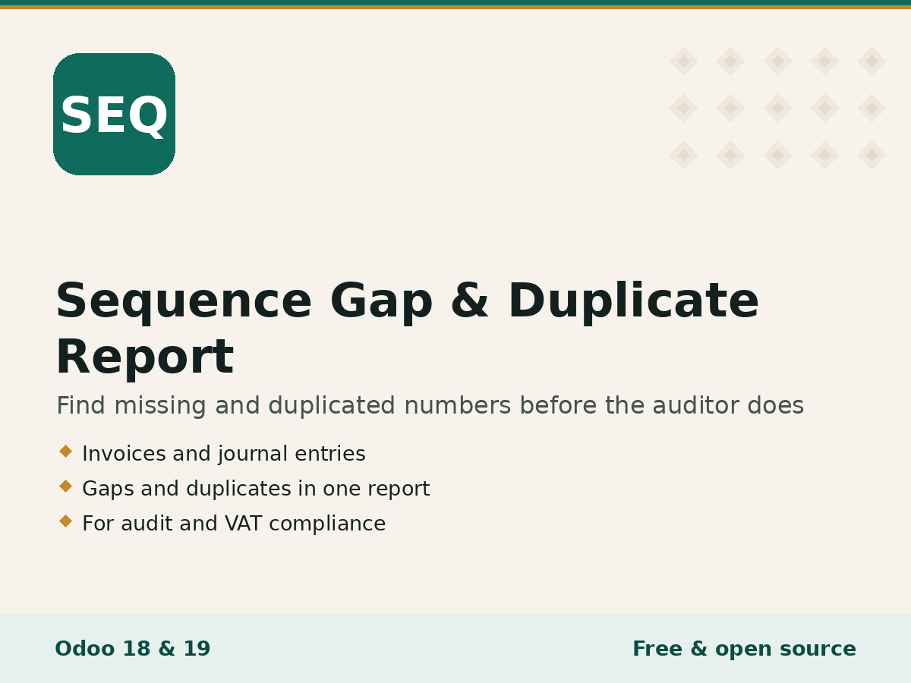
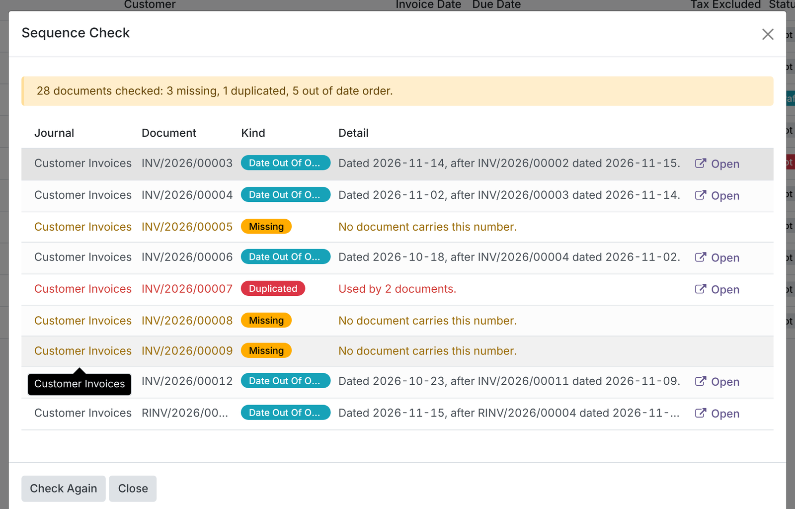
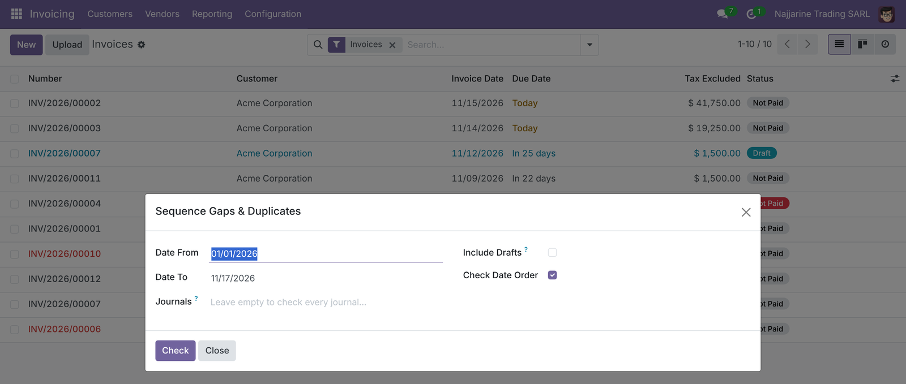
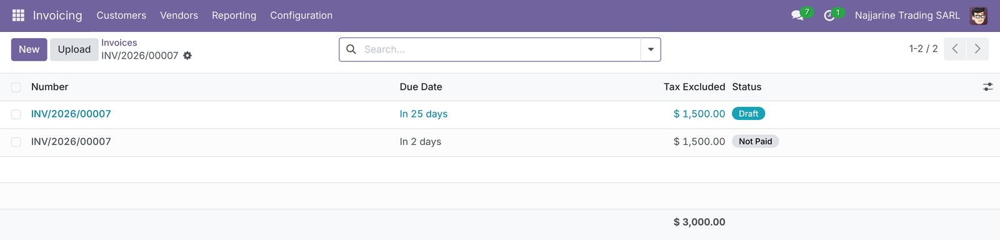

Tax authorities in the Gulf, and auditors almost everywhere, expect invoice numbering to be unbroken: no missing numbers, no repeats. Odoo numbers documents well but gives you no way to prove it, and gaps do appear in practice, usually from a deleted draft, a reset sequence, or a number set by hand. This report checks, and shows you exactly which documents to look at.
Numbers that should exist between the first and last document of a sequence but do not.
The same number used twice. Odoo's unique index already prevents this among posted documents, so in practice this catches a draft reusing a posted number, and data migrated in from another system.
A higher number carrying an earlier date than the one before it, which auditors query as often as gaps.
Documents are grouped by their real prefix, so a sequence that resets yearly or monthly is read correctly rather than reported as one enormous gap.
Check one journal or all of them, over any date range, with or without drafts.
Every duplicate and every out-of-order document has a button that opens the records themselves.



Completely read-only. It never renumbers, posts or changes anything, and documents whose reference does not end in digits are skipped rather than guessed at. A gap is not automatically a problem: a cancelled document legitimately leaves one, and this report tells you where to look rather than what to conclude.
Written and maintained by Mohammad Najjarine, Odoo consultant. Questions, bug reports and customisation requests are answered.
Phone +961 71 835279 WhatsApp +961 71 835279 github.com/najjarinelb